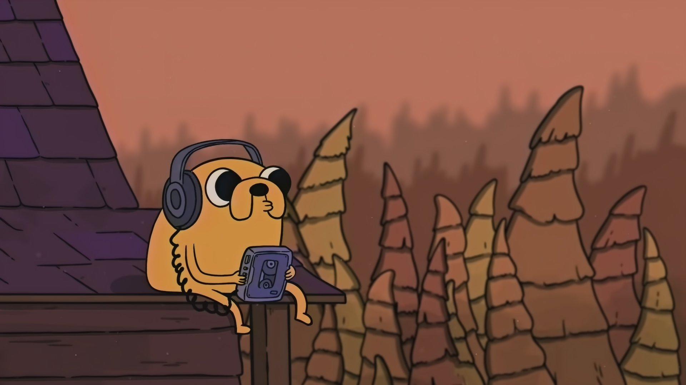

Finn "the human"
Life
Él es hijo de Martin Mertens y Minerva Campbell, y nació en las islas, pero tras una serie de hechos termino llegando a la Tierra de Ooo en donde fue adoptado por Joshua y Margaret. Durante mucho tiempo se creyó que Finn era el último humano, pero en ''Islas'' eso se erradicó por completo.
Go back with your friends